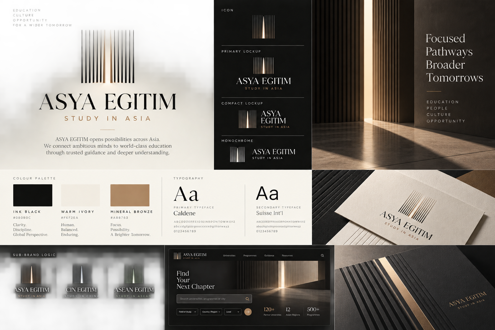
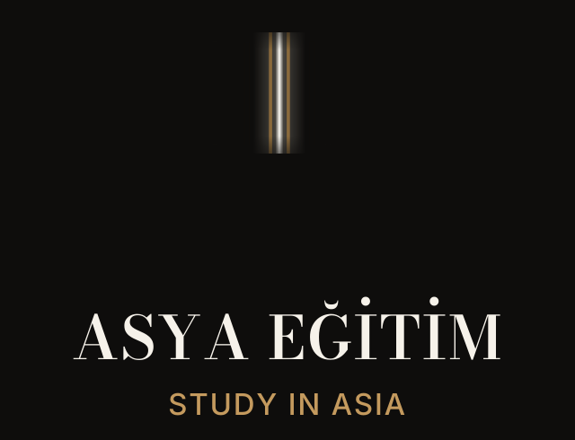
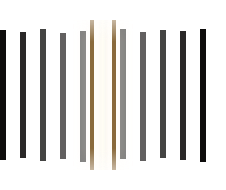
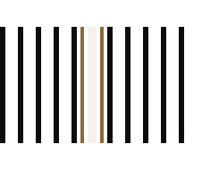
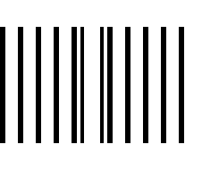
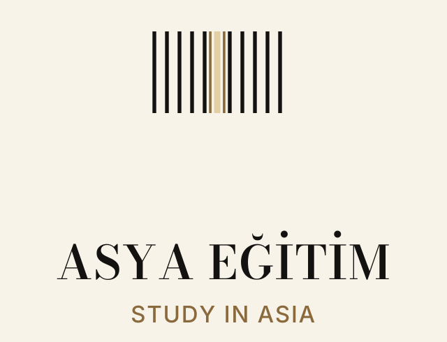

Fidelity reconstruction / kaynak → yeni rekonstrüksiyon → eski üretim
Sütun A: görsel hakikat kaynağı. Sütun B: yeni rekonstrüksiyon (Bodoni Moda kelime-mark, ışıyan açıklık, eriyen komşu çıtalar). Sütun C: eski kanonik üretim (9 bar + yassı bronz).
Yan yana: aynı marka mı?

A · KAYNAK (1536px raster)

B · REKONSTRÜKSİYON (vektör)
C · ESKİ ÜRETİM (kıyas için)
Rekonstrüe sembol (büyük) + üretim sadeleştirmesi + mono

tam efekt: gradyan + glow + erime

üretim: düz çekirdek + bronz yanlar

mono: tek renk, çekirdek boşaltmalı
Kilitlenmeler: koyu master + açık çeviri
koyu master (Bodoni path + Inter EN)

açık çeviri (mürekkep + bronz-yıkama açıklık)
Boy kanıtı: 64 / 32 / 16 px
16px’te ışık yarığı seçilir; tam alan değil, açıklık okunur (dürüst sınır).
Minimal ÇİN EĞİTİM uzantısı
Asya Eğitim
↳ ÇİN EĞİTİM
şemsiye tam sistem · alt satır basamaklı-muted · ayrı Çin kimliği yok (geçici dizgi kanıtı)